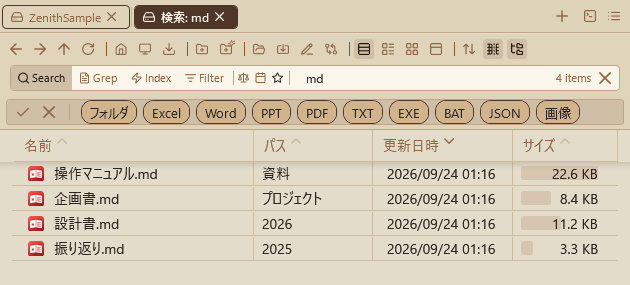

Search Features¶

Zenith Filer has 2 search modes for different use cases.
-
Normal search (on-demand file system search):
- Purpose: Quickly find items within the currently open folder (and its subfolders).
-
Behavior: An on-demand search that scans the file system in real time, recursively searching within the target folder's hierarchy.
Enter a keyword in the search box and press Enter to start searching in a new tab. Within search result tabs, instant search executes as you type, without needing to press Enter.
The display target for clicking folders or paths in search results can be configured in app settings under "Path click behavior in search results" (show in same tab / same pane new tab / opposite pane new tab). - Query syntax: Supports AND search with multiple keywords (space-separated), OR search (
|separator), exclusion (-keyword), and extension filters (ext:pdf). - Second search bar row: Enable it in settings and the search bar moves to the second row of the header in a side-by-side dual-pane layout only, giving the field and its filters more horizontal space. - Results: Both files and folders are matched, displayed with newest modified date first. Files without extensions (temporary files, caches, etc.) are excluded from results. Click column headers to change sort order. - Index search mode (cross-folder search): - Purpose: A mode for searching across multiple pre-registered folder groups regardless of the current folder. - Search targets: All paths registered in the nav pane's "Index Search Settings" (default: Ctrl+Shift+4). Both files and folders are indexed and included in results. This view displays the total number of files/folders in the index, and shows the status and count for each folder. - Operation: Click the magnifying glass icon on the left of the search bar or pressCtrl+Shift+Fto enter index search mode (lightning icon, background color change). - Search scope selector: In index search mode, a folder icon with a badge (e.g., 3/10) appears to the right of the lightning icon in the search bar.Clicking this button shows a popup listing registered folders, where you can individually include or exclude folders from the search scope via checkboxes. While filtering, the icon and badge turn amber. "Select All" and "Deselect All" buttons enable bulk operations.
Changing the selection redraws search results in real time. The selection state is automatically saved on app exit and restored on next launch. Locked folders are also included in the selection and can be searched against their frozen data.
The popup auto-closes on outside click or window deactivation (smart close). - Results: Both files and folders are matched, displayed with newest modified date first. Click column headers to change sort order. - Index technical specifications: - Storage location: A shared index is maintained in the
indexfolder inside thedatafolder in the app execution folder (changed from the previous%AppData%\ZenithFiler\Indexfor better portability). - Japanese search: Precision has been improved for Japanese keyword searches (e.g., searching for a compound word) so that files containing all split tokens are matched. Aname_rawfield with untokenized wildcard search is also used to ensure partial matches hit even on parse errors. - File structure: Composed ofsegments_N,_N.cfs,write.lock, andzenith.db(history DB) files. - Automatic updates: Indexes for registered folders are automatically updated in the background in response to file operations (add, delete, rename). - Search target filtering: Files without extensions (temporary files, caches, application-internal hash-named files, etc.) are not registered in the index and do not appear in search results. This makes it easier to quickly find files that users typically work with, such as Excel, PDF, and images. - Performance considerations: When multiple folders are registered, index creation processes them one at a time sequentially. This stabilizes the status bar progress display and reduces load on network drives.During index creation, "throttling" inserts wait times at regular intervals, and large intermediate folders like
.gitandnode_modulesare automatically skipped.Enabling "Power-saving mode" and "Process network drives gently" in app settings increases these wait times, further reducing CPU, disk, and network load. - Searching during index creation: Even while folder indexing progresses in the background, the search index is updated every 100 items, so already-indexed items appear in search results. The animated icon in the status bar confirms indexing is in progress; clicking it allows cancellation after confirmation. - Confirming creation results and counts: When index creation completes, the status bar shows "Added XX items to index." The "Index Search Settings" view in the nav pane displays the total number of indexed files/folders. - Creation progress: During index creation, progress is shown in the status bar as "Indexing: XX items (folder name)", updated every 100 items. - Per-folder status and counts: The index search settings list shows each folder's status as "Creating", "Not Created", or the indexed count. Locked (archived) folders display their frozen count and date with a padlock icon. Even with multiple registered folders, the list updates immediately as each folder's indexing completes. - Per-folder manual update: Right-click a folder in the list, and select "Rebuild Index" to delete and recreate that folder's index from scratch (also reflects deleted files), or "Incremental Update" to reflect only new and updated items without deletion. Incremental update is fast but deleted files remain in the index. Choose rebuild when you need to reflect deletions. - Size and date filters: To the right of the scope button in the search bar are a size filter button (balance icon) and a date filter button (calendar icon).
Clicking opens a popup for the following filtering. When a filter is active, the icon turns dark (
#1A1A1A) and a 1px charcoal gray underline appears below the icon (0.1s fade).Filter state is automatically saved on app exit and restored on next launch. Works consistently in both normal and index search modes.
-
Size filter: Text input for Min (minimum size) and Max (maximum size).
Supports suffixes
k(KB),m(MB),g(GB); unsuffixed values are interpreted as MB (e.g.,500k= 500 KB,2.5g= 2.5 GB). A real-time conversion preview is shown during input.Quick tips (< 100 KB / 100 KB ~ 10 MB / 10 MB ~ 1 GB / > 1 GB) can be clicked to auto-fill Min/Max. The Min text box is auto-focused when the popup opens, and Enter closes it. Folders are not affected by the size filter.
-
Date filter: Text input for start and end dates.
- Supported formats:
yyyyMMdd(e.g.,20260228),MMdd(e.g.,0228= this year),yyyy/M/d, etc. A real-time conversion preview (→ 2026/02/28) is shown during input. - Business-oriented preset chips (9, arranged in 3 rows):
- Short-term: Today / Yesterday / Last 3 Days
- Medium-term: Last 7 Days / Last 14 Days / Last 30 Days
- Period: This Month / Last Month / This Year
- Click to instantly apply to start / end.
- Calendar integration: A Calendar is always displayed at the bottom of the popup with bidirectional sync (text → calendar selection; calendar → text write-back).
- Focus control: The start text box is auto-focused when the popup opens, Tab moves to end, and Enter closes it.
- Lucene-level filter: In index search mode, NumericRangeQuery / TermRangeQuery are applied at the query level to exclude unnecessary documents upfront.
- ICollectionView filter: In normal search mode, applied as a post-filter on search results.
- The "Reset" button within the popup clears the filter.
- Right-click reset: Right-clicking the size filter icon (balance) or date filter icon (calendar) instantly clears only that filter (underline is also removed).
- Search presets: Click the ★ icon in the search bar to open the search preset popup.
- Save: "Save current conditions" button saves the current conditions (keyword, size filter, date filter, extension filter, sort settings, scope) as a named preset.
- Apply: Click a saved preset to restore all conditions at once; search executes automatically.
- Auto-categorization: Presets are auto-categorized for normal vs index search; only presets matching the current mode are displayed.
- Delete: Hover over a preset to reveal an × button for deletion.
- Persistence: Presets persist after app restart. When presets exist, the ★ icon turns dark with an underline.
- Preview: Hovering shows a preview popup with keyword, size, date, filter, scope, and sort details (size as
1 GB, date asyyyy/MM/dd). - Sync on apply: Applying a preset instantly syncs the size / date filter icon underlines to the correct state.
- File content search (grep):
- Purpose: Search for keywords within the contents (text) of files in the currently open folder. Unlike normal search which targets filenames, this mode searches inside file text.
- Engine: Uses ripgrep (rg.exe) for high-speed search with Japanese text support (UTF-8 / Shift-JIS, etc.).
- Operation: In normal search mode, click the FileSearch icon to the right of the magnifying glass icon on the left side of the search bar, or press
Ctrl+Shift+Gto enter content search mode (teal icon glow and background color change). The grep toggle is hidden during index search mode. - Search results: Results display files that contain matches. The Match column shows the first matched line preview (line number + text) and the number of matches within the file.
- Limitations: Binary files are automatically skipped. Default maximum file size is 50MB. If rg.exe is not placed in the tools/ folder, grep mode is automatically disabled.
- Filter in place (Filter):
- Purpose: Narrows the list of the folder you have open right where it is, as you type. No search result tab opens and subfolders are not searched.
- Operation: Press
Ctrl+Ior the Filter button in the search bar to put the cursor in the search box in Filter mode. The list narrows with every keystroke, keeping only items whose name contains what you typed (case-insensitive). - Clearing: Clear the text with the × in the search box or
Escand the list comes back in full and the search bar returns to normal search mode. Pressing another mode button also ends it.
- Search history: Normal search (magnifying glass), index search (lightning), and content search (FileSearch) maintain separate histories (up to 100 entries each).
- Supported formats:
When size or date filters were set during the search, "Preset: [name]", "Size: [abbreviation]", "Date: [abbreviation]" are displayed in column format to the right of the keyword. Preset names are dynamically matched against saved preset conditions and auto-displayed even for manual settings that match.
Selecting an item from history automatically restores the search mode, size filter, and date filter to the state at the time of search and re-executes.
Search Behavior (Configurable in Control Deck)¶
In Control Deck (default: Ctrl+Shift+O) > "Search" > "Search behavior," you can select from 3 patterns for where and how search results are displayed. The default is "Same pane, new tab".
| Option | Behavior | Best suited for |
|---|---|---|
| Same pane, new tab | Enter executes search. Creates a new search result tab in the same pane. Pressing X on the search bar in the results tab closes it and returns to the original tab. | Results stay within the same pane, keeping context predictable. Recommended default for beginners. |
| Same pane, instant search in current tab | Enter executes search. Shows results in the current tab. Pressing X on the search bar clears the search view and auto-reloads the current folder listing. | Quick switching between search and normal view without adding tabs. |
| Opposite pane, new tab | Enter executes search. Results from Pane A appear in Pane B and vice versa. Automatically switches to dual-pane when in single-pane mode. Pressing X on the results tab closes it and returns to the original tab in the same pane. | For comparison work and advanced users. Useful when viewing search results alongside the original listing. |
Search Display Settings (Configurable in Control Deck)¶
In Control Deck (default: Ctrl+Shift+O) > "Search" > "Search display settings," you can configure additional options for screen mode during search.
- Automatically switch to single-pane mode when searching (default: off): When enabled, automatically switches to single-pane mode when executing a search to display results in a wider view. When searching from Pane B, the search tab is moved to Pane A. When all search result tabs are closed, the original dual-pane mode is automatically restored.
Path Click Behavior in Search Results (Configurable in Control Deck)¶
In Control Deck (default: Ctrl+Shift+O) > "Search" > "Path click behavior in search results," you can select from 3 patterns for what happens when clicking the path column in search results. The default is "Same pane, new tab".
| Option | Behavior | Best suited for |
|---|---|---|
| Show in same tab | Switches from search results view to normal listing, showing the path in the same tab. | Navigate quickly to folders without adding tabs. |
| Same pane, new tab | Opens a new tab in the same pane (traditional behavior). | Keep the search results tab while opening clicked paths in separate tabs. Default recommended for use alongside search. |
| Opposite pane, new tab | Results from Pane A open in Pane B and vice versa. Automatically switches to dual-pane when in single-pane mode. | For comparison work and advanced users. View search results and opened folders side by side. |